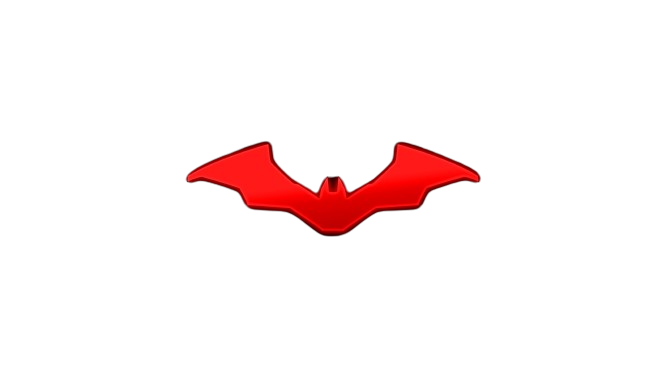

Matt Reeves
"Eu não queria fazer uma história de origem, não sentia que tinha uma nova maneira de fazer essa história, queria fazer um Batman imperfeito. Você estava vendo um Batman que ainda estava se tornando."


"Eu não queria fazer uma história de origem, não sentia que tinha uma nova maneira de fazer essa história, queria fazer um Batman imperfeito. Você estava vendo um Batman que ainda estava se tornando."

"Eu acho que é muito divertido tentar encontrar uma nova maneira de fazer algo quando tantos de seus heróis já interpretaram o Batman antes."

"Eu acho que todos os personagens são tão multidimensionais, eles não são preto e branco e a humanidade é o que as pessoas realmente respondem."

"A narrativa evoluiu até os dias de hoje, o quanto que os filmes do Batman evoluiram. não é tanto uma ideia do bem contra o mal, mas algo mais matizado. Neste caso nos permitindo voltar às origens do Batman que é a DC, "detective comics"."

"Edward Nashton e o Charada, uma vez que ele vê por trás da cortina de como a cidade de Gotham tem funcionado, é uma traição profunda, infelizmente parece que ele tem que ser extremo para ser ouvido."

"Há uma história muito rica, adorada, muito protetora e reverenciada para esse personagem do Batman."

"Há uma razão pela qual as coisas duraram e talvez todos fantasiem em ter uma capa preta fazendo a coisa certa."

"havia algo radicalmente diferente de tudo que vimos nos filmes do Batman antes."